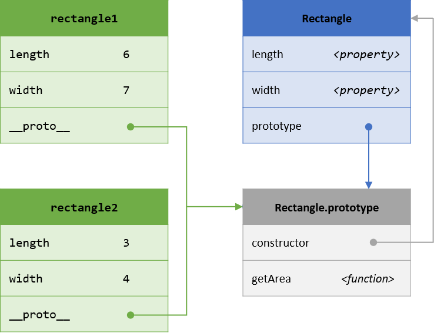

class: center, middle, lnu-background-yellow ### Grundläggande programmering (1DV021) # Föreläsning 7 <div class="lnu-footer"> <img src="../remark/images/lnu-logotype.png"> <img src="../remark/images/lnu-symbol.png"> </div> --- class: lnu-background-cc ### Upphovsrätt för detta verk Detta verk är framtaget av Mats Loock i anslutning till kursen Grundläggande programmering (1DV021) vid Linnéuniversitetet. Allt innehåll i detta verk förutom fotografier, ikoner, bild på kurslitteraturen samt Linnéuniversitetets logotyp och symbol, är licensierad under en <a rel="license" href="http://creativecommons.org/licenses/by/4.0/"> <img alt="Creative Commons-licens" style="border-width:0;vertical-align:middle" src="https://i.creativecommons.org/l/by/4.0/80x15.png" /> Creative Commons Erkännande 4.0 Internationell Licens </a>. #### Du får använda detta verk så här - kopiera hela eller delar av innehållet - sprida hela eller delar av innehållet - visa hela eller delar av innehållet offentligt och digitalt - konvertera innehållet till annat format - du får även göra om innehållet Om du förändrar innehållet så ta inte med fotografier, ikoner, bild på kurslitteraturen samt Linnéuniversitetets logotyp och symbol i din nya version! Vid all användning måste du ange källan: ”Linnéuniversitetet – Grundläggande programmering (1DV021)” och en länk till https://coursepress.lnu.se/kurs/grundlaggande-programmering och till Creative Common-licensen här ovan. --- # Från objekt med egenskaper... ``` let rectangle = { length: 6, width: 7 } console.log('Area: ' + rectangle.length * rectangle.width) ``` ## ...till objekt med egenskaper och metod, vidare till... ``` let rectangle = { length: 6, width: 7, getArea: function () { return this.length * this.width } } console.log('Area: ' + rectangle.getArea()) ``` --- # Konstruktorfunktion (i en egen modul)... <p style='font-size: 70%;margin-bottom:-1em;margin-top:-1em;'><code>src/Rectangle.js</code></p> ``` function Rectangle () { this.length = 0 this.width = 0 this.getArea = function () { return this.length * this.width } } module.exports = Rectangle ``` <p style='font-size: 70%;margin-bottom:-1em;margin-top:0em;'><code>app.js</code></p> ``` const Rectangle = require('./src/Rectangle') let rectangle = new Rectangle() rectangle.length = 6 rectangle.width = 7 console.log('Area: ' + rectangle.getArea()) ``` --- # Konstruktorfunktion med prototypfunktion... <p style='font-size: 70%;margin-bottom:-1em;margin-top:-1em;'><code>src/Rectangle.js</code></p> ``` function Rectangle (length = 0, width = 0) { this.length = length this.width = width } Rectangle.prototype.getArea = function () { return this.length * this.width } module.exports = Rectangle ``` <p style='font-size: 70%;margin-bottom:-1em;margin-top:0em;'><code>app.js</code></p> ``` const Rectangle = require('./src/Rectangle') let rectangle = new Rectangle(6, 7) console.log('Area: ' + rectangle.getArea()) ``` --- # ...alternativt uttryckt med klass-syntax. <p style='font-size: 70%;margin-bottom:-1em;margin-top:-1em;'><code>src/Rectangle.js</code></p> ``` class Rectangle { constructor (length = 0, width = 0) { this.length = length this.width = width } getArea () { return this.length * this.width } } module.exports = Rectangle ``` <p style='font-size: 70%;margin-bottom:-1em;margin-top:0em;'><code>app.js</code></p> ``` const Rectangle = require('./src/Rectangle') let rectangle = new Rectangle(6, 7) console.log('Area: ' + rectangle.getArea()) ``` --- ## Relationer mellan konstruktor, prototyp och objekt <div style="float:left;width: 54%;"> <p style='font-size: 70%;margin-bottom:-1em;margin-top:-1em;'><code>src/Rectangle.js</code></p> <pre><code class="js">function Rectangle (length = 0, width = 0) { this.length = length this.width = width } Rectangle.prototype.getArea = function () { return this.length * this.width } module.exports = Rectangle</code></pre> <p style='font-size: 70%;margin-bottom:-1em;margin-top:0em;'><code>app.js</code></p> <pre><code class="js">const Rectangle = require('./src/Rectangle') let rectangle1 = new Rectangle(6, 7) let rectangle2 = new Rectangle(3, 4) console.log('Area: ' + rectangle1.getArea()) console.log('Area: ' + rectangle2.getArea()) </code></pre> </div>  <div style="clear: both;"></div> - När en konstruktorfunktion skapas skapas även en tillhörande prototyp, som är ett objekt bl.a. innehållande en referens, `constructor`, till konstruktorfunktionen samt egenskaper och metoder gemensamma för alla instanser av typen. - Varje instans har en referens, `__proto__`, till konstruktorns prototyp. --- # Problem(?) med publika egenskaper <p style='font-size: 70%;margin-bottom:-1em;margin-top:-1em;'><code>src/Die.js</code></p> ``` function Die () { this.faceValue } Die.prototype.roll = function () { this.faceValue = Math.floor(Math.random() * 6) + 1 } module.exports = Die ``` <p style='font-size: 70%;margin-bottom:-1em;margin-top:0em;'><code>app.js</code></p> ``` const Die = require('./src/Die') let die1 = new Die() let die2 = new Die() // Inte några värden en sexsidig tärning ska ha... die1.faceValue = 42 die2.faceValue = 'Kilroy was here!' ``` - En publik egenskap kan sättas till vilket värde som helst. - LÖSNING: datat, egenskapen `faceValue`, ska kapslas in (och döljas). - Semi-privat - Privat --- # Privata medlemmar - Privata medlemmar kallas egenskaper och metoder som inte kan kommas åt utanför konstruktorfunktionen. - Privata medlemmar skapas av konstruktorn. - Konstruktorns parametrar. - Medlemmar definierade med let (eller var, eller const). ``` function Foo (param) { // "privat" this.ohSoPublic = param // "publik" this._notSoPrivate = param // "publik" MEN "semi-privat" genom namngivning (namn inleds med _) let secret = 42 // "privat" const getTheMeaningOfLife = function () { // "privat" return 'forty-two' } } let foo = new Foo(21) console.log(foo.ohSoPublic) // OUTPUT: 21 console.log(foo._notSoPrivate) // OUTPUT: 21 console.log(foo.secret) // OUTPUT: undefined console.log(foo.getTheMeaningOfLife()) // EXCEPTION: TypeError: foo.getTheMeaningOfLife is not a function ``` - "Getters" och "setters" krävs för åtkomst av privata egenskaper. --- # En semi-privat tärning - Genom att använda `Object.defineProperty` kan du ange den funktion som ska köras då en egenskaps värde hämtas. <p style='font-size: 70%;margin-bottom:-1em;margin-top:0em;'><code>src/Die.js</code></p> ``` function Die () { this._faceValue = undefined // semi-private property } Object.defineProperty(Die.prototype, 'faceValue', { get: function () { return this._faceValue } }) Die.prototype.roll = function () { this._faceValue = Math.floor(Math.random() * 6) + 1 } module.exports = Die ``` <p style='font-size: 70%;margin-bottom:-1em;margin-top:0em;'><code>app.js</code></p> ``` const Die = require('./src/Die') let die1 = new Die() let die2 = new Die() die1.roll() die2.roll() console.log(die1.faceValue) console.log(die2.faceValue) die1.faceValue = 42 // EXCEPTION: TypeError: Cannot set property faceValue of #<Die> which has only a getter ``` --- ## En privat tärning - Genom att använda `Object.defineProperty` kan du ange den funktion som ska köras då en egenskaps värde hämtas respektive tilldelas ett värde. <p style='font-size: 70%;margin-bottom:-1em;margin-top:0em;'><code>src/Die.js</code></p> ``` function Die () { let _faceValue Object.defineProperty(this, 'faceValue', { get: function () { return _faceValue }, set: function (value) { const intValue = Number.parseInt(value, 10) if (!Number.isInteger(intValue) || intValue < 1 || intValue > 6) { throw new Error('faceValue must be set to an integer between 1 and 6.') } _faceValue = intValue } }) } Die.prototype.roll = function () { this.faceValue = Math.floor(Math.random() * 6) + 1 } module.exports = Die ``` <p style='font-size: 70%;margin-bottom:-1em;margin-top:-1em;'><code>app.js</code></p> ``` const Die = require('./src/Die') let die1 = new Die() die1.faceValue = 42 // EXCEPTION: Error: faceValue must be set to an integer between 1 and 6. ``` --- # En semi-privat tärning med klass <p style='font-size: 70%;margin-bottom:-1em;margin-top:0em;'><code>src/Die.js</code></p> ``` class Die { constructor () { this._faceValue = undefined } get faceValue () { return this._faceValue } roll () { this._faceValue = Math.floor(Math.random() * 6) + 1 } } module.exports = Die ``` <p style='font-size: 70%;margin-bottom:-1em;margin-top:-1em;'><code>app.js</code></p> ``` const Die = require('./src/Die') let die1 = new Die() let die2 = new Die() die1.roll() die2.roll() console.log(die1.faceValue) console.log(die2.faceValue) die1.faceValue = 42 // EXCEPTION: TypeError: Cannot set property faceValue of #<Die> which has only a getter ``` --- ## En högst privat tärning med klass <p style='font-size: 70%;margin-bottom:-1em;margin-top:-1em;'><code>src/Die.js</code></p> ``` let _faceValue = new WeakMap() class Die { constructor () { _faceValue.set(this, undefined) } get faceValue () { return _faceValue.get(this) } set faceValue (value) { const numberValue = Number(value) if (!Number.isInteger(numberValue) || numberValue < 1 || numberValue > 6) { throw new Error('faceValue must be set to an integer between 1 and 6.') } _faceValue.set(this, value) } roll () { this.faceValue = Math.floor(Math.random() * 6) + 1 } } module.exports = Die ``` <p style='font-size: 70%;margin-bottom:-1em;margin-top:-1em;'><code>app.js</code></p> ``` const Die = require('./src/Die') let die1 = new Die() die1.faceValue = 42 // EXCEPTION: Error: faceValue must be set to an integer between 1 and 6. ``` --- ## En högst privat tärning med klass 2019(?) <p style='font-size: 70%;margin-bottom:-1em;margin-top:-1em;'><code>src/Die.js</code></p> ``` class Die { #faceValue // private class field/class property, stage 3 proposal ES2019 constructor () { this.roll() } get faceValue () { return this.#faceValue } set faceValue (value) { const numberValue = Number(value) if (!Number.isInteger(numberValue) || numberValue < 1 || numberValue > 6) { throw new Error('faceValue must be set to an integer between 1 and 6.') } this.#faceValue = value } roll () { this.#faceValue = Math.floor(Math.random() * 6) + 1 } } module.exports = Die ``` <p style='font-size: 70%;margin-bottom:-1em;margin-top:-1em;'><code>app.js</code></p> ``` const Die = require('./src/Die') let die1 = new Die() die1.faceValue = 42 // EXCEPTION: Error: faceValue must be set to an integer between 1 and 6. ``` --- # Upprepning av kod - `Person` och `Student` innehåller kod gemensam för de båda typerna. Behöver det vara så? Nej, med hjälp av arv (_"inheritance"_) kan kod återanvändas instället för att upprepas. <p style='font-size: 70%;margin-bottom:-1em;margin-top:0em;'><code>src/Person.js</code></p> ``` function Person (name, age) { this.name = name this.age = age } Person.prototype.toString = function () { return 'Jag, ' + this.name + ', är ' + this.age + ' år.' } module.exports = Person ``` <p style='font-size: 70%;margin-bottom:-1em;margin-top:-1em;'><code>src/Student.js</code></p> ``` function Student(name, age, isCampus) { this.name = name this.age = age this.isCampus = isCampus } Student.prototype.toString = function () { return 'Jag, ' + this.name + ', läser på ' + (this.isCampus ? 'campus' : 'distans') + ' och är ' + this.age + ' år.' } module.exports = Student ``` --- # Återanvändning av kod genom arv - Genom att låta `Student` ärva från `Person` kan kod i `Person` återanvändas av `Student`. <p style='font-size: 70%;margin-bottom:-1em;margin-top:0em;'><code>src/Person.js</code></p> ``` function Person (name, age) { this.name = name this.age = age } Person.prototype.toString = function() { // överskuggar metoden i Object.prototype return 'Jag, ' + this.name + ', är ' + this.age + ' år.' } module.exports = Person ``` <p style='font-size: 70%;margin-bottom:-1em;margin-top:-1em;'><code>src/Student.js</code></p> ``` const Person = require('./Person') function Student (name, age, isCampus) { Person.call(this, name, age) // anrop av konstruktorn för Person this.isCampus = isCampus } Student.prototype = Object.create(Person.prototype) // ärver prototypen från Person Student.prototype.constructor = Student // återställer konstruktorn till Student Student.prototype.toString = function() { // överskuggar metoden i Person.prototype return 'Jag, ' + this.name + ', läser på ' + (this.isCampus ? 'campus' : 'distans') + ' och är ' + this.age + ' år.' } module.exports = Student ``` --- ## Återanvändning av kod genom arv med klasser <p style='font-size: 70%;margin-bottom:-1em;margin-top:-1em;'><code>src/Person.js</code></p> ``` class Person { constructor (name, age) { this.name = name this.age = age } toString() { // överskuggar metoden i Object.prototype return 'Jag, ' + this.name + ', är ' + this.age + ' år.' } } module.exports = Person ``` <p style='font-size: 70%;margin-bottom:-1em;margin-top:-1em;'><code>src/Student.js</code></p> ``` const Person = requier('./Person') class Student extends Person { constructor (name, age, isCampus) { super(name, age) // anrop av konstruktorn för Person this.isCampus = isCampus } toString() { // överskuggar metoden i Person return 'Jag, ' + this.name + ', läser på ' + (this.isCampus ? 'campus' : 'distans') + ' och är ' + this.age + ' år.' } } module.exports = Student ``` <p style='font-size: 70%;margin-bottom:-1em;margin-top:-1em;'><code>app.js</code></p> ``` let p = new Person('Ellen', 6) console.log(p.toString()) // OUTPUT: Jag, Ellen, är 6 år. let s = new Student('Nisse', 42, true) console.log(s.toString()); // OUTPUT: Jag, Nisse, läser på campus och är 42 år. ``` --- # Av vilken typ är ett objekt? - Med operatorn `instanceof` kan du undersöka om en konstruktor har används för att skapa ett objekt. ``` let person1 = new Person('Nisse', 42) let student1 = new Student('Ellen', 21, true) console.log(person1 instanceof Person) // OUTPUT: true console.log(person1 instanceof Student) // OUTPUT: false console.log(student1 instanceof Person) // OUTPUT: true console.log(student1 instanceof Student) // OUTPUT: true ``` --- # Återanvändning av kod genom länkning <p style='font-size: 70%;margin-bottom:-1em;margin-top:-2em;'><code>src/personMaker.js</code></p> ``` const personBase = { toString: function () { return `Jag, ${this.name}, är ${this.age} år.` } } let createPerson = function (name, age) { return Object.create(personBase, { age: { value: age, writable: true, configurable: true, enumerable: true }, name: { value: name, writable: true, configurable: true, enumerable: true } }) } module.exports.createPerson = createPerson ``` <p style='font-size: 70%;margin-bottom:-1em;margin-top:-1em;'><code>src/studentMaker.js</code></p> ``` const personMaker = require('./personMaker') let createStudent = function (name, age, isCampus) { let obj = Object.create(personMaker.createPerson(name, age), { isCampus: { value: isCampus, writable: true, configurable: true, enumerable: true } }) obj.toString = function () { return `Jag, ${this.name}, läser på ${this.isCampus ? 'campus' : 'distans'} och är ${this.age} år.` } return obj } module.exports.createStudent = createStudent ```